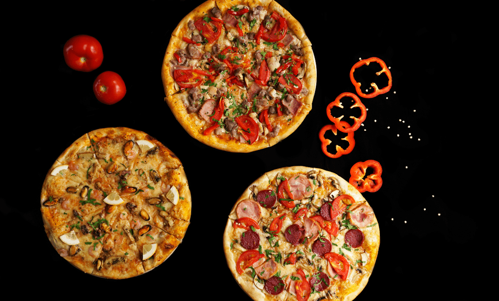

        <mat-toolbar color="primary">
          <span (click)="showMain()" >My Favourite Pizza</span>
    
          <button (click)="closeMain()" mat-icon-button class="example-icon" aria-label="Example icon-button with menu icon">
              <mat-icon>menu</mat-icon> Analytic
            </button>
        </mat-toolbar>
    


<div class="pizzas-block" *ngIf="main">

    <mat-card *ngFor="let obj of objs | ObjNgFor; let i = index">
        <div class="align-block">
            
            <h1>{{obj.key}}</h1>
            <p><b>Ingridients</b>: <span *ngFor="let product of obj | ObjNgFor ; let first = first;" [ngClass]="{ 'first' : first }">{{product.key}}, </span></p>
            <button (click)="cook(obj)" class="cook-btn">Cook Me</button>
        </div>
    </mat-card>
</div>

<div *ngIf="!main">
<app-analytic [(popular)]="popular" (onChanged)="onChanged($event)"></app-analytic>

</div>